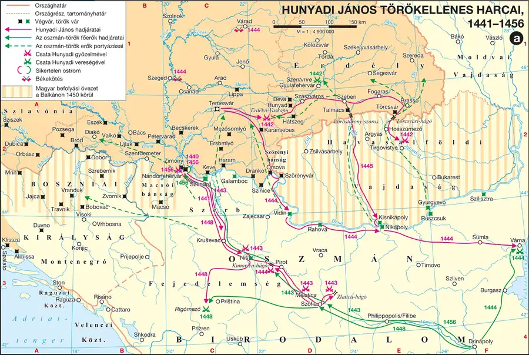
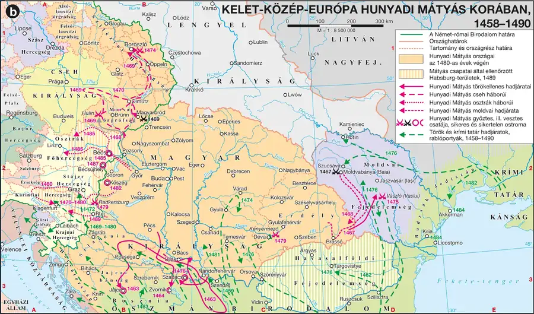

Az oszmán fenyegetés és Hunyadi János felemelkedése
Be tudod mutatni a végvárrendszer Zsigmond-kori kiépülését, Hunyadi János származását és katonai tapasztalatszerzését, valamint 1441–1442-es első győzelmeit.
A védelmi rendszer Zsigmond alatt
Az 1389-es (első) rigómezei csata után a törökök megjelentek Magyarország határainál, majd 1396. szeptember 25-én Nikápolynál a Luxemburgi Zsigmond által vezetett nemzetközi keresztes sereg súlyos vereséget szenvedett. Ezután Zsigmond a védekezésre rendezkedett be: az 1397-es temesvári országgyűlésen elfogadtatta a telekkatonaság rendszerét (minden birtokosnak 20 jobbágytelek után egy könnyűfegyverzetű lovasíjászt kellett kiállítania), hűbéresévé tette Szerbiát, Boszniát és Havasalföldet ütközőállamként, és megkezdte a déli végvárrendszer kiépítését — ekkor került magyar kézre Nándorfehérvár is.
Hunyadi János származása és tapasztalatszerzése
Hunyadi János 1407 körül született Kolozsváron, havasalföldi eredetű köznemesi családból. Apródi szolgálatot teljesített Lazarevics szerb despota, majd az Újlakiak udvarában. Az 1430-as években Zsigmond király udvarába került, akivel eljutott Itáliába és Csehországba is — itt ismerte meg a korszerű zsoldos és huszita hadviselést: a fegyelmezett hadseregek előnyeit, a tűzfegyverek és a szekérvár alkalmazását.
Zsigmond veje, Habsburg Albert halála után kitört a trónharcban Hunyadi I. Ulászlót támogatta, és győzelmeivel az ország leghatalmasabb bárói közé emelkedett: elnyerte a szörényi bánságot, az erdélyi vajdaságot, a temesi ispánságot és a nándorfehérvári kapitányságot. E méltóságok révén az ország haderejének jelentős részével rendelkezett, és egyben a török elleni védekezés vezetőjévé is váltak.
Az első győzelmek (1441–1442)
1441-ben Hunyadi átvette Nándorfehérvár védelmét, betört Szerbiába, és legyőzte a szendrői béget. 1442-ben az Erdélybe betörő Mezid bégtől Marosszentimrénél vereséget szenvedett, de nem adta fel a harcot: a lakosságot is fegyverbe szólítva útját állta a foglyok tömegével elvonulni készülő ellenségnek, és Gyulafehérvár mellett már győzött — a foglyok így elkerülték a rabszolgasorsot. Szeptember elején a Törcsvári-szoros előterében legyőzte Sehabeddin ruméliai beglerbég egyesített európai seregét is.
Hunyadi hadművészetének lényege a három harcmodor ötvözése: a nyugati lovagi páncélos roham, a huszita szekérvár-taktika és a keleti (kun eredetű) könnyűlovas-portyázó hadviselés. Ez a szintézis — nem egyetlen módszer — magyarázza sikereit a nála technikailag fejlettebb oszmán sereggel szemben is.
Kötelező adatok
| Fogalmak | Személyek | Kronológia |
|---|---|---|
| kormányzó, szekérvár, végvár, szultán | Luxemburgi Zsigmond, Hunyadi János | 1396: a nikápolyi csata |
1. forrás
A krónikás elmondja, hogy Mezid bég serege Marosszentimrénél legyőzte Hunyadit, és nagy számú foglyot ejtve, dúsan megrakodva indult vissza a Balkánra. Hunyadi azonban nem adta fel: a vidék lakosságát fegyverbe szólítva utolérte az ellenséget, és rajtaütött a menetelő seregen. A csatában a törökök vereséget szenvedtek, és a foglyul ejtett magyar lakosokat kiszabadították, mielőtt rabszolgaként elhurcolhatták volna őket.
- Milyen helyzetben szenvedett először vereséget Hunyadi a forrás szerint?
- Milyen módszerrel fordította meg a vereséget győzelemre?
- Milyen közvetlen emberi következménye volt a győzelemnek a helyi lakosság számára?
Ellenőrző feladatok
A hosszú hadjárat és a várnai csata
Be tudod mutatni az 1443–1444-es hosszú hadjárat menetét és a drinápolyi (váradi) béke feltételeit, valamint el tudod magyarázni, miért vezetett a béke megszegése a várnai vereséghez.
A hosszú hadjárat (1443. október – 1444. január)
Hunyadi sikerein fellelkesültek az európai uralkodók is, és támogatást ígértek egy nagyobb szabású hadjárathoz, amelynek célja a törökök kiűzése volt Európából. Hunyadi 1443 októberében, meglepően kései — a törökök által nem várt — időpontban indította el a hosszú hadjáratot: egy 35 ezer fős, jól kiképzett sereggel (szerbek, bolgárok, bosnyákok, albánok is részt vettek benne), célja Drinápoly, a török főváros elfoglalása volt.
Hunyadi Nis közelében kétszer is legyőzte a törököket, és bevette Szófiát, de a Balkán-hegységen nem tudott áttörni, mert az ázsiai harcokat odahagyó, Európába visszatérő II. Murád szultán lezárta a hágókat. Hunyadi visszafordult, és hazafelé további győzelmeket aratott. A hadjárat végül nem érte el végső célját (Drinápoly bevétele), ám Hunyadi egyszer sem szenvedett vereséget, sok várat elfoglalt, és a törökök Szerbia kiürítésén, várak átadásán túl még hadisarc fizetését is vállalták az 1444-ben megkötött drinápolyi (váradi) békében.
A béke megszegése és a várnai vereség
I. Ulászlót Hunyadi sikerei és tanácsadói — köztük Cesarini pápai legátus — arra sarkallták, hogy felrúgva a frissen megkötött békét, indítson újabb támadást a török ellen. 1444 szeptemberében újabb hadjárat kezdődött, ezúttal kisebb sereggel és kedvezőtlenebb nemzetközi háttérrel: a szövetségesek nem tudták megakadályozni, hogy a török főerők átkeljenek a tengerszorosokon. A döntő ütközetre 1444. november 10-én Várnánál került sor: a törökök győztek, és a csatában I. Ulászló király is elesett.
A várnai vereség oka nem Hunyadi hadvezetési hibája, hanem politikai döntés volt: a friss béke felrúgása, elégtelen sereggel, elmaradó nemzetközi (itáliai flotta) támogatással. Ez a megkülönböztetés — katonai teljesítmény vs. politikai kockázatvállalás — fontos árnyalás minden Hunyadi-esszében.
Kötelező adatok
| Fogalmak | Személyek | Kronológia |
|---|---|---|
| szultán, szpáhi, janicsár | Hunyadi János, I. (Hunyadi) Mátyás | 1443–1444: a hosszú hadjárat 1444: a várnai csata |
2. forrás
Hunyadi János törökellenes harcai, 1441–1456
A hadjáratok iránya, a fontosabb csaták és Nándorfehérvár stratégiai helye értelmezhető.

A magyar krónikás úgy írja le a csatát, hogy Ulászló király a győzelem közeli reményében vakmerően a janicsárok közé vezette lovasságát, ahol elesett, ezután a magyar sereg rendezetlenül visszavonult. A török forrás dicsőíti a szultán bölcsességét, amiért nem hagyta magát megzavarni a kezdeti magyar sikerektől, és kiemeli, hogy „a magyarok vezérét”, Hunyadit tisztelettel, kiváló ellenfélként említi, aki a vereség után is rendben vezette vissza megmaradt seregét.
- Mi okozta a magyar sereg vereségét a magyar forrás szerint?
- Hogyan viszonyul a török forrás Hunyadi személyéhez?
- Milyen névvel illeti a két forrás Hunyadi Jánost, és mit árul ez el a korabeli megítéléséről?
Ellenőrző feladatok
Hunyadi kormányzósága
Be tudod mutatni Hunyadi kormányzóvá választásának körülményeit, birtokgyarapodását, és ismered az 1448-as rigómezei vereség okait.
Kormányzóvá választás
Várna után, 1445-ben a rendek elismerték a még gyermek Habsburg V. Lászlót királynak, de mellé — a Habsburg-párti Garai–Cillei-liga és a Hunyadi-liga egyezsége nyomán, a korszak országgyűlésein tömegesen megjelenő köznemesség nyomásának engedve — kormányzóvá választották Hunyadi Jánost (1446–1452). Hunyadi elismerte V. László királyságát, cserébe szinte a teljes uralkodói jogkört gyakorolta a gyermek király mellett.
Kormányzósága idején — a többi báróhoz hasonlóan — tovább gyarapította birtokait: 26 vár és 4 millió hold föld került a kezébe. Fontos különbség azonban a többi bárótól: az állam és saját bevételeit (kb. 220 000 arany) az ország védelmére fordította, nem magánvagyon-gyarapításra.
A második rigómezei vereség (1448)
1448-ban Hunyadi újabb támadó hadjáratot vezetett a török ellen. Hadait nem sikerült egyesítenie a török ellen felkelő albánokkal (Szkander bég vezetésével), ráadásul a szerb fejedelem, Brankovics György elárulta. Végül Rigómezőnél háromnapos kemény csatában vereséget szenvedett (második rigómezei csata, október 17–19.).
A két rigómezei vereség (1448 és a korábbi, 1389-es délszláv csata) és Várna (1444) közös vonása: mindegyik a nemzetközi szövetségesi rendszer megbízhatatlanságát mutatja — hiányzó itáliai flotta, hiányzó albán csatlakozás, áruló szerb fejedelem. Ez az ismétlődő minta jó esszéérv arra, miért nem volt realitás a törökök teljes kiszorítása egyetlen ország erejéből.
Kötelező adatok
| Személyek | Kronológia |
|---|---|
| ESzilágyi Mihály, Kapisztrán János | 1446–1452: Hunyadi kormányzósága E1389: az (első) rigómezei csata E1448: a második rigómezei csata |
3. forrás
A feljegyzés elmondja, hogy Hunyadi kormányzósága idején is jelentős birtokokat szerzett — más báróhoz hasonlóan. A hozzá befolyó jövedelmeket azonban, szemben a többi főúrral, elsősorban nem saját udvara fényére vagy magánvagyonának gyarapítására, hanem katonák zsoldjára, várak megerősítésére és a török elleni hadjáratok költségeire fordította.
- Miben hasonlított Hunyadi birtokpolitikája a kortárs bárókéhoz?
- Miben tért el jövedelmeinek felhasználása a többi főúrétól?
- Fogalmazza meg, miért erősíthette ez a különbség Hunyadi köznemesi és köznépi népszerűségét!
Ellenőrző feladatok
Nándorfehérvár diadala
Be tudod mutatni az 1456-os ostrom előzményeit és lefolyását, ismered a győzelem szereplőit, és tudod értékelni a diadal jelentőségét — beleértve a déli harangszó eredetét is.
Előzmények
II. Hódító Mehmed szultán 1453-ban elfoglalta Konstantinápolyt, 1455-ben pedig Szendrő kivételével csaknem egész Szerbiát meghódította, majd 1456-ban megindult Nándorfehérvár ellen. A török veszélyre megmozdult Európa: V. Miklós pápa keresztes háborút hirdetett, amit utódja, III. Callixtus is felkarolt, a magyar országgyűlés pedig rendkívüli hadiadót szavazott meg.
A magyar haderő három elemből állt: Nándorfehérvárt Hunyadi sógora, Szilágyi Mihály védte 7000 katonával; Hunyadi maga kb. 10 ezres, zsoldosokból és a megyei nemességből álló hadat tudott kiállítani; az olasz ferences szerzetes, Kapisztrán János vezetésével pedig 25–30 ezres keresztes sereg gyűlt össze — a török veszélyt közvetlenül megtapasztaló Délvidék népe tömegesen csatlakozott zászlaja alá.
Az ostrom (1456. július)
A török támadás 1456. július 4-én kezdődött. Hunyadi július 14-én érkezett a vár felmentésére, a Dunán létesített török hajózárat áttörve jutott be seregével a várba. Július 21-én a törökök végső nagy rohama megtört, másnap pedig — a keresztesek ötletszerű támadását kihasználva — Hunyadi kitört a romos várfalak közül, és nyílt csatában legyőzte a szultáni hadat. A törökök ezután éjszaka elvonultak; üldözésükre azonban nem került sor, mert két járvány is felütötte fejét a magyar táborban (huszitizmus és pestis) — ennek esett áldozatul Hunyadi János is, 1456. augusztus 11-én, és nem sokkal utána Kapisztrán János is.
A győzelem jelentősége
III. Callixtus pápa az Úr színeváltozásának napját (augusztus 6.), amikor értesült a diadalról, az egész kereszténység kötelező ünnepének nyilvánította; már korábban elrendelte, hogy a Nándorfehérvárnál harcolók buzdítására minden délben szóljanak a harangok — innen ered a déli harangszó hagyománya. Nándorfehérvár megvédése óriási jelentőségű volt: elestével védhetetlenné vált volna a déli határvonal, s vele az egész ország; a diadal mintegy 65 évre elhárította egy újabb nagy török támadás veszélyét.
Vigyázz a három szereplő szerepének pontos megkülönböztetésére: Szilágyi Mihály a vár védője (helyben állt ellen); Hunyadi János a felmentő sereg vezetője (kívülről tört be és győzött nyílt csatában); Kapisztrán János a keresztes had szervezője és lelkesítője. A vizsgán mindhárom nevet a megfelelő szerephez kell kötni.
Kötelező adatok
| Fogalmak | Személyek | Kronológia, topográfia |
|---|---|---|
| szultán | EII. Mehmed, Szilágyi Mihály, Kapisztrán János | 1456: a nándorfehérvári diadal E1453: Konstantinápoly eleste Nándorfehérvár |
4. forrás
A krónikás leírja, hogy a törökök ágyúikkal folyamatosan lőtték a várfalakat, míg azok nagy szakaszon leomlottak. Hunyadi hajóhada áttörte a Dunán vont török zárat, és élelmet, fegyvert juttatott a várba. A végső rohamkor a keresztesek — bár erre parancsot nem kaptak — önként rontottak a török táborra, ezt látva Hunyadi is kitört seregével, és együtt szorították vissza, majd futamították meg az ellenséget.
- Milyen szerepet játszott Hunyadi flottája az ostrom során?
- Mi jellemezte a keresztesek szerepvállalását a végső roham során?
- Milyen fegyvernemet említ a forrás a törökök oldaláról, és mire használták?
Ellenőrző feladatok
Hunyadi Mátyás hatalomra kerülése és a központosítás
Be tudod mutatni Mátyás trónra kerülésének drámai körülményeit, ismered gazdasági és katonai reformjait — a füstpénzt, a kincstartóságot és a fekete sereget.
A trónra kerülés drámai útja
Hunyadi János halála után kiújult a hatalmi harc. Idősebb fiát, Hunyadi Lászlót — mert Nándorfehérváron tőrbe csalta és megölette Cillei Ulrik országos főkapitányt — V. László király 1457-ben kivégeztette; Mátyás pedig fogolyként a király prágai udvarába került. V. László azonban 1457-ben váratlanul meghalt. Hosszú tárgyalások után, és Szilágyi Mihály 15 ezer katonájának fenyegetésével, a nagybácsi elérte, hogy az országgyűlés 1458 januárjában Mátyást — ekkor mindössze 14 éves — királlyá válassza. Csak ezután térhetett haza, és foglalhatta el a trónt; koronázni még nem lehetett, mert a Szent Korona III. (Habsburg) Frigyesnél volt.
Hatalmának megszilárdítása
Mátyás (1458–1490) határozottan kezdte uralkodását: a korábbi megállapodásokat felrúgva leváltotta Garai László nádort, az öt évre kormányzónak kinevezett Szilágyi Mihályt a török ellen küldte harcolni (aki fogságba esett és megölték), letörte a Garai–Cillei liga lázadását, elhárította a velük szövetkező III. Frigyes támadását, és legyőzte a Felvidéken berendezkedett huszita Jan Giskrát is, akinek végül Arad megyei birtokokat adott, katonáit pedig zsoldosként alkalmazta. 1463-ban Bécsújhelyen békét kötött III. Frigyessel: a császár átadta a koronát 80 000 forintért, cserébe megtarthatta a magyar királyi címet, és kikötötte, hogy ha Mátyás törvényes örökös nélkül hal meg, a Habsburgok öröklik a magyar trónt. A visszakapott koronával 1464-ben koronázták meg Mátyást.
Gazdasági és állami reformok
Mátyás gazdasági intézkedéseinek célja a jövedelmek kivonása volt a rendek és a bárók ellenőrzése alól. Felállította a kincstartóságot, amelynek élére köznemesi és polgári származású szakembereket állított (pl. Ernuszt János budai zsidó polgár, Handó György mezővárosi polgár, Nagylucsei Orbán jobbágyi származású). Az 1467-es országgyűlésen megszüntették a kamara hasznát; a kapuadó helyett bevezette a füstpénzt (1467) — ezt nem jobbágyportánként, hanem az annál kisebb egységet jelentő jobbágyi háztartásonként (tűzhelyenként) kellett fizetni, így egy portán élő több háztartás miatt nőtt a beérkező adó mennyisége. A harmincadvámot új néven, koronavámként szedték be, immár a korábban mentességet élvezőktől is. Legnagyobb bevételét a rendszeresen (gyakran évente kétszer is) beszedett rendkívüli hadiadó jelentette (1 forint telkenként), amit az országgyűlésnek kellett megszavaznia.
A kincstár jövedelme a Zsigmond-kori 200 000 forintról 500 000–750 000 forintra nőtt — európai összehasonlításban is jelentős összeg (a jóval nagyobb Oszmán Birodalom bevétele 1 800 000 forint volt). Mátyás átszervezte a kancelláriát is, élére bizalmasát, Vitéz Jánost állította, ezzel korlátozva a bárókból és főpapokból álló királyi tanács befolyását; a bíróságokon növelte a szakképzett ítélőmesterek számát, és megszüntette a bárói méltóságnak számító főkincstartói tisztséget.
A fekete sereg
Mátyás jövedelmeinek emelkedésével párhuzamosan építette ki a később fekete seregnek nevezett zsoldoshaderőt, amelynek jelentős részét (15–20 000 fő) igyekezett állandóan fegyverben tartani — hatalmas költséggel (egy nehézlovas havonta kb. 5, egy gyalogos 2–3 aranyat kért). A sereg magját az egykori cseh husziták (Giskra egykori katonái) alkották, vezérei — Magyar Balázs, Kinizsi Pál, Haugwitz — csehek, németek és magyarok voltak. A hadsereg négy fegyvernemből állt (nehézlovasság, könnyűlovasság, gyalogság, tüzérség), és korszerűnek számított jelentős gyalogsága és ágyúi miatt is. Ez a sereg a rendek által megszavazott adókból tartotta fenn magát, de teljes mértékben az uralkodó irányítása alatt állt — nemcsak hódításokat szolgált, hanem a király erejét is növelte a rendekkel szemben.
A füstpénz és a kapuadó közötti különbség klasszikus vizsgacsapda: a kapuadó portánként, a füstpénz háztartásonként (tűzhelyenként) adózott — mivel egy portán több háztartás is élhetett, ez a technikai módosítás önmagában is növelte az állami bevételt, anélkül hogy az adó mértékét látványosan emelte volna.
Kötelező adatok
| Fogalmak | Személyek | Kronológia, topográfia |
|---|---|---|
| rendkívüli hadiadó, füstpénz, fekete sereg, zsoldos, Szent Korona | I. (Hunyadi) Mátyás; EVitéz János | 1458–1490: Mátyás uralkodása Kolozsvár |
5. forrás
Az országgyűlés kimondja, hogy a köznemesség és a bárók, együttes akaratból, Hunyadi Mátyást választják királlyá, mivel apja, Hunyadi János érdemei a haza védelmében köztudottak. Az új király megígéri, hogy a jövőben az ország ügyeiben a rendekkel egyetértésben jár el, nem emel önkényesen új adót, és nem adományoz idegeneknek tisztséget vagy birtokot az ország nemesei rovására.
- Milyen érdemre hivatkozva választják királlyá Mátyást a forrás szerint?
- Milyen ígéreteket tesz az új király a rendeknek?
- Mennyiben tartotta be Mátyás ezeket az ígéreteket uralkodása későbbi szakaszában? Indokolja válaszát!
Ellenőrző feladatok
Mátyás külpolitikája, reneszánsz udvara és az utódlás
Be tudod mutatni Mátyás törökpolitikáját és nyugati hódításait, ismered a reneszánsz udvar és a corvinák jelentőségét, és tudod értékelni az utódlás megoldatlanságát.
Törökpolitika: védekezés, nem hódítás
Mátyás felismerte, hogy apja sikerei — de még inkább kudarcai (Várna, második rigómező) — nyomán Magyarország lehetőségeit meghaladja a törökök kiűzéséhez szükséges erőfeszítés, ezért inkább védekező, a status quót őrző harcokra vállalkozott. A déli végvárrendszert megerősítette (külső vonal: Nándorfehérvártól Jajcáig, Kninig, Klisszáig; belső vonal: Karánsebes, Lugos, Temesvár, Pétervárad, Bihács). 1463-ban elfoglalta Jajca várát, és ezzel ellenőrzése alá vonta Bosznia északi részét; 1476-ban elfoglalta Szabács várát; 1479-ben Kenyérmezőnél Kinizsi Pál és Báthory István vezette sereg legyőzte az Erdélybe betörő török hadat. 1483-ban Mátyás öt évre békét kötött II. Bajezid szultánnal — ezt a magyar királyok egészen 1520-ig többször megújították, bár ez nem valódi békét, csak a nagyobb hadjáratok szüneteltetését jelentette.
Nyugati politika: a dinasztiaépítés
Mátyás rendkívül aktív nyugati politikát folytatott: szerette volna elismertetni Európával az új „Hunyadi-dinasztiát”, és kísérletet tett egy közép-európai nagyhatalom létrehozására. A cseh trón megszerzéséért 1468-ban hadjáratot indított a pápa által eretneknek nyilvánított Podjebrád György ellen; elfoglalta Morvaország és Szilézia jelentős részét, de magát Csehországot nem tudta megszerezni — a cseh rendek végül Jagelló Ulászlót választották királyukká. A cseh háborúkat az 1479-es olmützi béke zárta le: Mátyás megtarthatta Sziléziát, Morvaországot és Luzsicét, Csehországról viszont le kellett mondania.
1477-ben osztrák háború kezdődött, amely a gmunden-korneuburgi békével zárult (Frigyes elismerte Mátyás cseh trónigényét, és 100 000 arany hadisarcot vállalt). A hadisarc elmaradása miatt Mátyás 1482-ben újra hadat indított, célja immár a területszerzés mellett a császári cím megszerzése volt: 1485-ben elfoglalta Bécset, 1487-ben pedig Bécsújhelyet is. A hőn áhított császári címet azonban nem sikerült megszereznie, mert Frigyes 1486-ban elérte fia, Miksa társuralkodóvá választását.
A reneszánsz udvar és a corvinák
Az Itáliából érkező Beatrixnak (Mátyás második felesége, 1476-tól) jelentős szerepe volt abban, hogy a magyar királyi udvarban meghonosodott a reneszánsz műveltség és életvitel. A humanista eszméket Magyarországon először Vitéz János és unokaöccse, Janus Pannonius közvetítette, majd a Beatrix-házasság után érkeztek nagyobb számban itáliai építészek, szobrászok, festők és tudósok. Mátyás udvarába hívta Galeotto Marziót (első könyvtárosa, aki anekdotagyűjteményt írt Mátyás bölcs mondásairól) és Antonio Bonfinit (posztumusz történetírója, akinek köszönhető a „Corvinus” melléknév — a Hunyadiak holló-címere miatt állította, hogy a család az ókori római Corvinus nemzetségből ered).
Mátyás a korszak szokásaihoz képest hatalmas — 2000–2500 kötetes — könyvtárat gyűjtött össze, csak a Vatikáni Könyvtár volt ennél nagyobb. A míves, kézzel írt könyveket díszes kötésük után nevezik corvináknak; ma világszerte kicsivel több mint 200 hiteles corvina ismert, ezek kb. egyharmada található Magyarországon. E1473-ban Hess András nyomdát alapított Budán — az első nyomtatott magyarországi könyv Thuróczy János Chronica Hungaroruma volt —, de a nyomda később elsorvadt a kódexekkel szembeni versenyben. Mátyás 1467-ben Pozsonyban egyetemet is alapított, amely szintén elsorvadt.
Az utódlás megoldatlansága és a halál
Mátyásnak nem volt törvényes utóda — mindkét házassága gyermektelen maradt. Volt viszont egy osztrák polgárlánytól született fia, Corvin János, akit a király trónörökössé próbált tenni: neki adta a hatalmas Hunyadi-birtokokat, megkérte számára a milánói herceg lányának kezét, és Bécsnek is hűségesküt kellett tennie iránta. Mátyás 1490 áprilisában, Bécsben, agyvérzésben halt meg. Életműve befejezetlen maradt: nem volt törvényes utódja, és halála után újra a főurak kezébe került a hatalom — végül nem Corvin János, hanem a gyengekezű Jagelló II. Ulászló lett a következő magyar király.
Mátyás életművének értékelése kettős: az ország gazdasági teljesítőképessége határán volt (a jobbágyságra hárított adóterhek fenntarthatatlanok voltak erős királyi hatalom nélkül), és nem volt törvényes utódja — mégis a nép emlékezetében a törvényeket betartató, „igazságos”, a kultúrát pártoló, Magyarországot európai súlyú állammá tevő uralkodóként maradt meg. Ez a kettősség — valós korlátok és tartós utóélet — a legjobb záró esszégondolat.
Kötelező adatok
| Személyek | Kronológia |
|---|---|
| EVitéz János, Dózsa György | 1453: Konstantinápoly eleste 1479: a kenyérmezei csata 1485: Mátyás elfoglalja Bécset |
6. forrás
Kelet-Közép-Európa Hunyadi Mátyás korában, 1458–1490
Mátyás külpolitikai céljai és hódításainak térbeli kiterjedése vizsgálható.

A történetíró elmondja, hogy a budai palota két nagy termét töltötte meg a király könyvtára, amelyben a legkiválóbb ókori és kortárs szerzők munkái sorakoztak, aranyozott, festett kötésben. A könyveket firenzei kereskedőktől vásárolták, más uralkodóktól cserében kapták, vagy a budai másolóműhelyben sokasodtak. A király maga is gyakran időzött a könyvtárban, és szívesen vitatkozott az odalátogató tudósokkal.
- Milyen forrásokból gyarapodott a királyi könyvtár állománya a leírás szerint?
- Milyen elnevezéssel illetjük ma ezeket a míves, kézzel írt könyveket?
- Milyen szerepe lehetett a könyvtárnak Mátyás nemzetközi tekintélyének növelésében?
Ellenőrző feladatok
Fogalomtár és kronológia
Fogalomtár — gépeld be, amit keresel
Kronológia
Topográfia — mit kell megmutatni az atlaszban?
- A Hunyadi-hadjáratok színterei: Nis, Szófia, Drinápoly, Várna, Rigómező.
- A nándorfehérvári diadal helyszíne: Nándorfehérvár, a Duna vonala.
- Mátyás déli végvárrendszere: Jajca, Szabács, Knin, Klissza (külső vonal); Karánsebes, Lugos, Temesvár, Pétervárad, Bihács (belső vonal).
- Mátyás nyugati hódításai: Morvaország, Szilézia, Bécs, Bécsújhely.
- Reneszánsz központok: Buda, Visegrád, Pozsony (egyetemalapítás), Kolozsvár (Mátyás szülővárosa).
Érettségi típusú komplex feladatok
A három feladat az írásbeli I. részének mintájára készült: forrásalapú, több részkérdésből áll, és részpontokra megy. Oldd meg papíron, majd nyisd meg a pontozott megoldást.
Adott négy csata: Gyulafehérvár (1442), Várna (1444), Rigómező (1448), Nándorfehérvár (1456).
- Jelölje meg, melyik végződött magyar győzelemmel és melyik vereséggel! (4 pont)
- Nevezze meg, melyik csatában esett el a magyar király! (1 pont)
- Nevezze meg, melyik csatában halt meg maga Hunyadi János is (bár nem a csatában, hanem közvetlenül utána)! (1 pont)
- Fogalmazza meg, mi volt a közös ok a rigómezei és a várnai vereség hátterében! (2 pont)
- Nevezze meg, mi váltotta fel a kapuadót 1467-ben, és mi volt köztük a lényegi különbség! (3 pont)
- Nevezze meg a legnagyobb bevételt jelentő adónemet, és azt, hogy ki szavazta meg! (2 pont)
- Nevezze meg, mennyire nőtt a királyi kincstár jövedelme Zsigmondhoz képest! (2 pont)
- Fogalmazza meg, mire fordították a bevételek nagy részét! (1 pont)
„A budai palota két termét megtöltő könyvtárban a kódexek egy része vásárlás, más része csere vagy másolás útján került a gyűjteménybe. A míves, festett kötésű könyveket ma corvináknak nevezzük.” (tartalmi kivonat)
- Nevezze meg a corvinák becsült darabszámát Mátyás korában! (1 pont)
- Nevezze meg, ki adta Mátyásnak a Corvinus melléknevet, és mi volt az indoklása! (2 pont)
- Nevezze meg, ki érkezett Mátyás udvarába Beatrix királyné révén nagyobb számban, és milyen hatással volt ez a magyar kultúrára! (2 pont)
- Nevezze meg, hány hiteles corvina ismert ma, és ebből mennyi van Magyarországon! (2 pont)
Esszéírás — szerkezet, minta, szószámláló
Fontos: ez a témakör mindig magyar történelmi
Hunyadi János és Hunyadi Mátyás magyar történelmi téma, ezért középszinten kizárólag a hosszú esszében (210–260 szó) szerepelhet, a rövid esszé ilyenkor egyetemes témát dolgoz fel. Emelt szinten bármelyik esszétípusban előfordulhat.
Kidolgozott hosszú esszé
Mutassa be a források és ismeretei segítségével a nándorfehérvári diadal előzményeit és jelentőségét! (hosszú esszé, 210–260 szó)
Mintamegoldás · 236 szóA feladat a nándorfehérvári diadal előzményeinek és jelentőségének bemutatását kéri.
1453-ban II. Hódító Mehmed szultán elfoglalta Konstantinápolyt, majd 1455-ben csaknem egész Szerbiát meghódította. 1456-ban a szultáni sereg Nándorfehérvár ellen indult — a dunai utat vigyázó erősség a magyar védelem legfontosabb láncszeme volt. A veszélyre Európa is megmozdult: a pápa keresztes háborút hirdetett, a magyar országgyűlés pedig rendkívüli hadiadót szavazott meg.
A várat Szilágyi Mihály védte hétezer katonával, Hunyadi János zsoldosokból és megyei nemességből álló hadat állított ki, Kapisztrán János ferences szerzetes pedig 25–30 ezres keresztes hadat gyűjtött össze. A támadás július 4-én kezdődött; Hunyadi július 14-én törte át a török hajózárat, és jutott be a várba. Július 21-én a végső roham megtört, másnap pedig a keresztesek ötletszerű támadását kihasználva Hunyadi kitört, és nyílt csatában győzött.
A forrás szerint a törökök éjszaka elvonultak, de a győzelem árát a magyar tábor is megfizette: a pestisjárványnak esett áldozatul Hunyadi János, alig három héttel a diadal után.
A győzelem jelentősége rendkívüli: a pápa a diadal napját az egész kereszténység ünnepévé nyilvánította, és elrendelte a déli harangszót. Nándorfehérvár megvédése mintegy 65 évre elhárította egy újabb nagy török támadás veszélyét, és megőrizte az ország belsejének biztonságát.
Miért működik? Az első mondat visszahangozza a feladatot. Az „előzmények” és „jelentőség” szerkezetileg is elkülönül, ahogy a feladat kéri. A forrásra konkrétan hivatkozik. A záró mondat nem ismétel, hanem értékel: kimondja, miért volt „rendkívüli” a jelentőség.
Írd meg te — élő szószámlálóval
A szöveg csak ebben a böngészőablakban él — frissítéskor elvész.
Gyakorló esszétémák
- E1 — Mutassa be Hunyadi János 1443–1444-es hosszú hadjáratát és a várnai vereség okait! (hosszú)
- E2 — Fejtse ki Hunyadi Mátyás pénzügyi reformjait és azok politikai jelentőségét! (hosszú)
- E3 — Mutassa be a fekete sereg felépítését és szerepét Mátyás hatalmában! (hosszú)
- E4 — Mutassa be Mátyás nyugati politikájának állomásait és eredményeit! (hosszú)
- EE5 — Hasonlítsa össze Hunyadi János és Hunyadi Mátyás törökpolitikáját, és értékelje, miért választottak eltérő stratégiát! (komplex/összehasonlító)
Tételvázlatok és vizsgáztatói kérdések
Luxemburgi Zsigmond, Hunyadi János és Hunyadi Mátyás törökellenes harcai.
A válaszában térjen ki Hunyadi felemelkedésére, a hosszú hadjáratra, Várnára és Nándorfehérvárra! Használja a mellékelt forrásokat és az atlaszt!
| Perc | Rész | Tartalom |
|---|---|---|
| 0–2 | Bevezetés | Zsigmond végvárrendszere, Hunyadi származása és felemelkedése. |
| 2–6 | Az első győzelmek és a hosszú hadjárat | Marosszentimre-Gyulafehérvár, a hosszú hadjárat (1443–44). Forrás: Marosszentimre. |
| 6–10 | Várna és kormányzóság | A béke felrúgása, várnai vereség, Hunyadi kormányzósága. Forrás: a várnai csata. |
| 10–15 | Nándorfehérvár, zárás | Az 1456-os ostrom, a diadal jelentősége. Atlasz: Nándorfehérvár, a hadjáratok útvonalai. |
Hunyadi Mátyás: a központosított királyi hatalom, jövedelmek és kiadások, birodalomépítő tervek.
A válaszában térjen ki Mátyás hatalomra kerülésére, gazdasági reformjaira, a fekete seregre és nyugati politikájára! Használja a mellékelt forrásokat és az atlaszt!
| Perc | Rész | Tartalom |
|---|---|---|
| 0–2 | Bevezetés | Mátyás drámai trónra kerülése (1458). |
| 2–6 | Gazdasági reformok | Füstpénz, kincstartóság, jövedelemnövelés. Forrás: Mátyás megválasztása. |
| 6–10 | A fekete sereg és törökpolitika | A zsoldossereg felépítése, Jajca, Szabács, Kenyérmező. Atlasz: a végvárrendszer. |
| 10–15 | Nyugati politika, reneszánsz, zárás | Cseh és osztrák háborúk, corvinák, az utódlás. Forrás: a Bibliotheca Corviniana. |
Várható vizsgáztatói kérdések
- Milyen három harcmodor ötvözetéből állt Hunyadi hadviselése?
- Miért vezetett vereséghez a várnai béke felrúgása?
- Milyen szerepet játszott Szilágyi Mihály, Hunyadi János és Kapisztrán János Nándorfehérvárnál?
- Mi a különbség a kapuadó és a füstpénz kivetése között?
- Miért nem indított Mátyás nagy támadó hadjáratot a törökök ellen?
- EMiért nem sikerült Mátyásnak megszereznie a német-római császári címet?
Tíz érettségi tipp ehhez a témakörhöz
- Ez a témakör mindig magyar történelmi. Középszinten csakis a hosszú esszében szerepelhet — ez az egyik legbiztosabban visszatérő hosszú esszétéma.
- Négy csatát fejből tudj: kettő győzelem, kettő vereség. Győzelem: Gyulafehérvár (1442), Nándorfehérvár (1456). Vereség: Várna (1444), Rigómező (1448). Mindegyikhez kösd az okát is.
- Vigyázz a nándorfehérvári szereposztásra! Szilágyi Mihály védte a várat, Hunyadi János a felmentő sereget vezette, Kapisztrán János a kereszteseket szervezte — ne keverd össze a szerepeket.
- A forrás nem díszlet. Minden esszében legalább kétszer hivatkozz rá konkrétan — a forráshasználat a szóbelin 12 pontot ér.
- Ne keverd a kapuadót és a füstpénzt! Kapuadó = portánként; füstpénz = háztartásonként (tűzhelyenként), Mátyás vezette be 1467-ben.
- Mátyás törökpolitikája tudatosan defenzív volt, nem gyengeség. Felismerte, hogy Magyarország ereje nem elég a törökök kiűzéséhez — ezt mindig indokold meg, ne csak állítsd.
- Kösd össze az évszámokat eseményekkel. 1444 (Várna), 1456 (Nándorfehérvár), 1458 (Mátyás megválasztása), 1463 (Jajca, bécsújhelyi béke), 1467 (füstpénz), 1485 (Bécs elfoglalása), 1490 (Mátyás halála) — ezek önmagukban is kérdezhetők.
- A fekete sereg kettős funkciót töltött be. Nemcsak a törökök és a nyugati hódítások ellen harcolt, hanem a rendekkel szembeni királyi erő eszköze is volt — mindkettőt említsd.
- Az utódlás kudarca nem von le Mátyás életművéből, csak árnyalja azt. A törvénytelen fiú (Corvin János) trónra segítésének kísérlete kudarcot vallott, de ez nem teszi érvénytelenné a reformokat — ez a fajta mérlegelés a „történelmi gondolkodás” szempontnál hoz pontot.
- Gyakorolj időre. A hosszú esszére 45–50 perc jusson; a szóbeli 30 perces felkészülési idejében készíts a fenti perc-beosztást követő vázlatot.